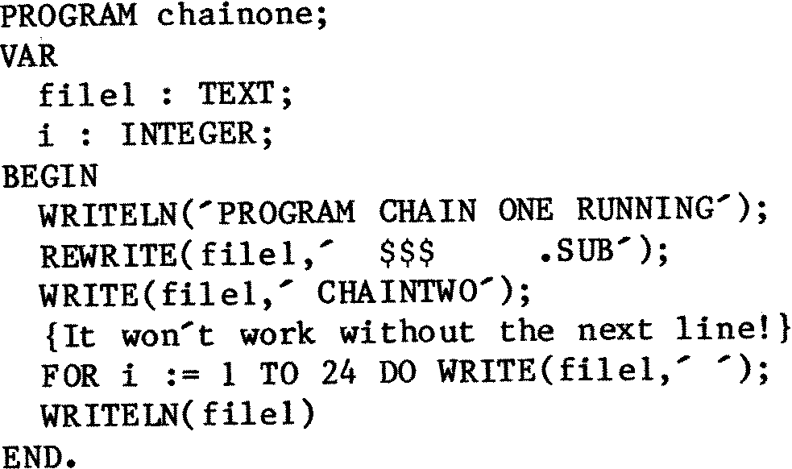
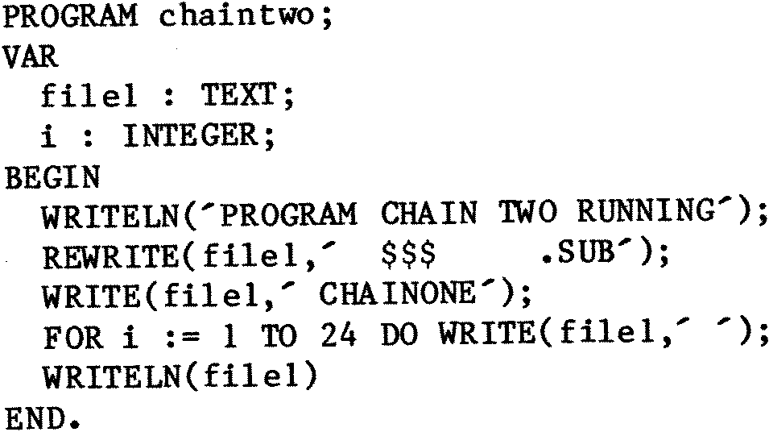

Doctor Dark’s Diary – Episode 22.
Chaining programs in Hisoft Pascal.
One of the great things about Poly-Data’s Compas Pascal is that it lets
you chain programs using the “execute” procedure. Hisoft
Pascal does not have
this useful facility built in, so I have hacked (at last, Heloise, a correct
usage of the verb “to hack”!) a way round the problem, which I hope will be
found useful by all ambitious programmers sooner or later. It uses one of the
features of CP/M to work its crafty trick, and it was a devil of a job to make
it work properly at first. When I originally had the idea, I thought it would
be possible to poke the name of the next command file into the command buffer,
and then just return to CP/M, but that didn’t work. CP/M just wiped the
buffer, and sat there with its usual smug “A>” prompt. The second attempt
worked, eventually, and is based on the way each line of a “submit” file is
stored on disk as a file full of commands is processed. If you save a file
called “$$$.SUB” on a disk in drive B: and then put it in drive A: you will
see that CP/M reads the file and tries to use it as commands. It also erases
the file. To create such a file without the bother of using an editor, it
should be possible to use PIP, as on the Sirius I use at work, where “PIP
BLABLA.TXT=CON:” puts whatever you type into the file BLABLA.TXT until you
type a control Z. For some reason, this will not work on my system. (Now that
I come to think of it, I may have been using MS-DOS, where you use “COPY CON:
BLABLA.TXT”, which explains why it refuses to work on Marvin!) So, I wrote a
few files using an editor instead, and remembered all the trouble I used to
have trying to get “submit” to work, before I gave up trying to use it
altogether. I may be wrong, but I do not think I have ever seen it said that
the commands in submit files have to have spaces in front of them. Neither
have I ever read that command lines in Submit files need to be padded out with
spaces the way I have done below. They must, though, with my CP/M. I wonder
why? Anyway, here are a couple of programs:–

